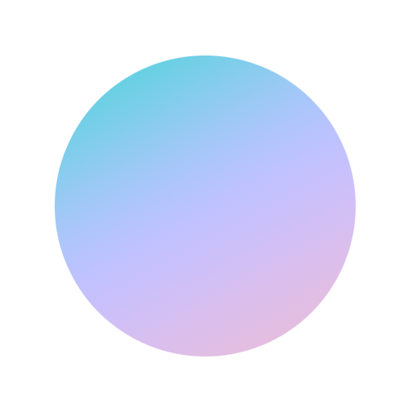
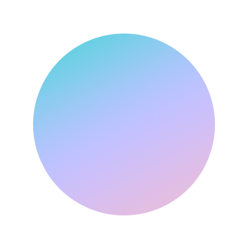
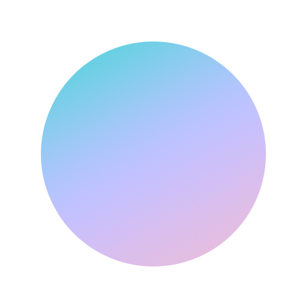

Frame object.
Changes the view to the original position.Color tool.
Switches on and off the 3D model's color information. With the colors off and the light in the right direction, details will appear in higher contrast.Light tool.
Switches on and off the light controls. When activated, click and drag towards the edges of the screen to enhance details. To rotate the 3D model, deactivate the light controls.Measure tool.
Switches on and off the ruler. When activated, click on two places to measure the distance between them.Full screen.
Activates full screen mode. Click ESC to exit.
